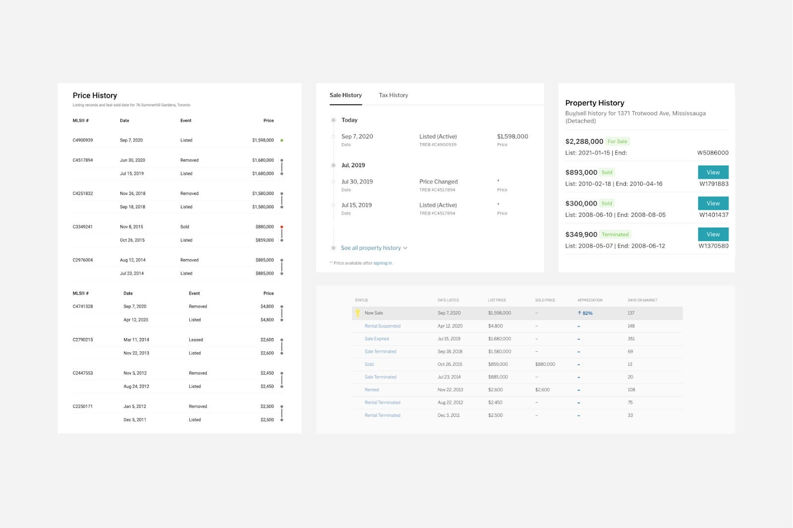
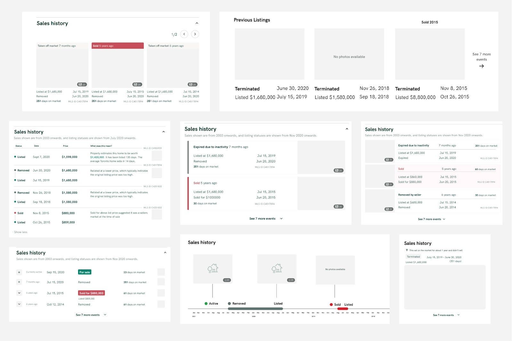
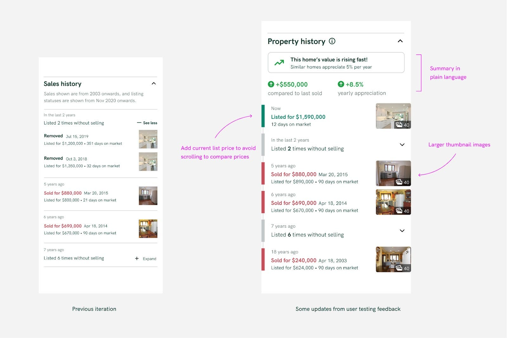
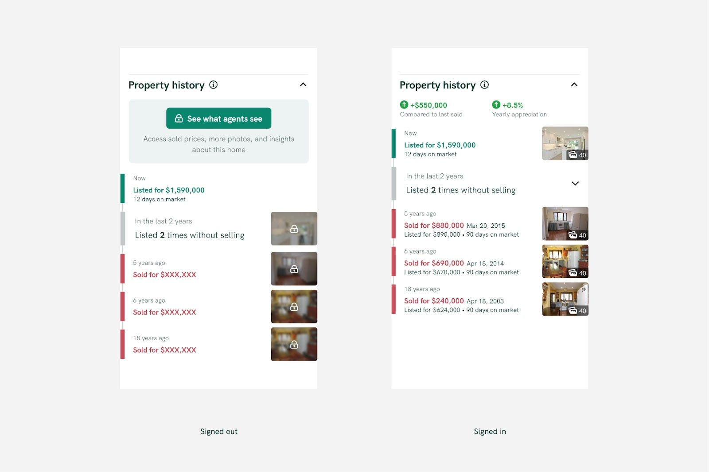
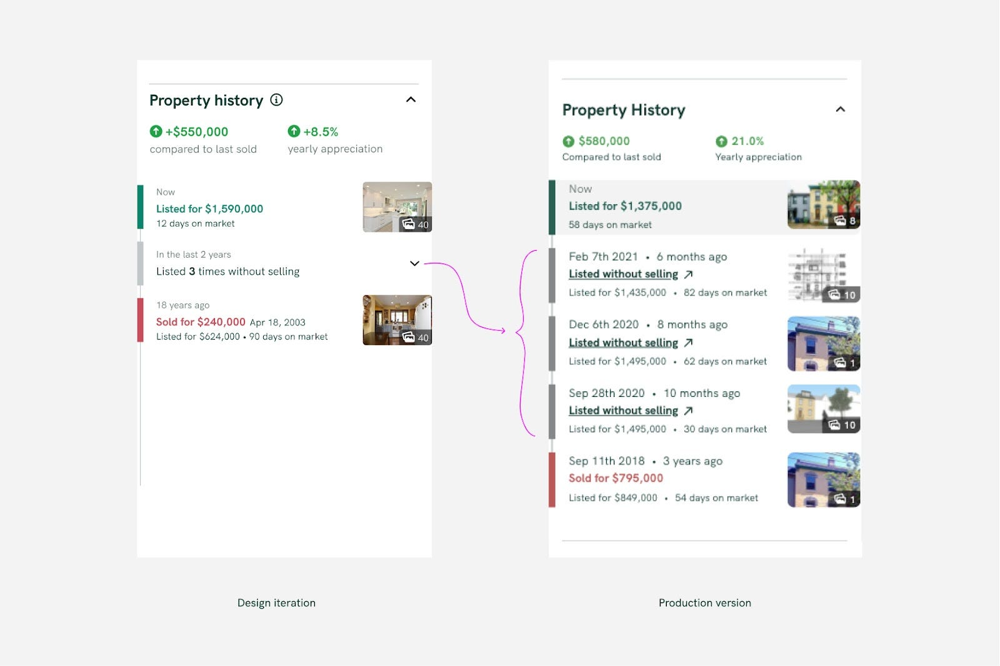

Product Design
Property history designed for buyers to make informed decisions
Data is powerful. But the difference between useful and complicated comes down to design.
- Company
- Properly
- Year
- 2021
- Role
- Product Designer
TL;DR
While I worked on all Properly’s listing site features, I highlight this one because it was much-requested since sold listings were only made available to the public in Ontario at the end of 2018, so few listings sites had this feature at all, let alone a well-designed version that actually informs homebuyers’ decisions.
My role
I was the Product Designer on this project, working with David Pardy (Product Lead) and Senior Software Developers; Douglas Anderson and Daniel Gipps. I worked on it from the first user conversations and wireframes through prototype testing, the final UI and iterating after release.

In March 2021, we embarked on a design journey to add a much-requested feature to our listing site, the sold and listing history of each property on the market. Like any project, we started by chatting with existing users and other house-hunting Torontonians using similar sites to look at listings.
What can past data tell us about the future?
From the perspective of users, we learned ways that the history of a listing can inform the decision to pursue a home (or not):
- It shows how the property has appreciated over time and how it compares to similar homes
- It can surface potential red flags such as the quality of a home indicated by high turnover or possible listing strategies indications such as if the home is going on and off-market without selling
We also turned to our internal real estate experts for insights from their experiences. They highlighted a few scenarios that could help a customer make a decision about the property:
- It’s never been listed before. The original owners are putting it up for sale, which can indicate it’s a great property for the long run.
- A property is listed at a different price than a previous time on market. Best look for interior photos to see if there are any changes to the property.
- Overall, there is no one clear-cut reason why a home would go on and off the market without selling. There can be all sorts of reasons or scenarios and it would be hard to draw conclusions with hard rules.
By breaking down the individual pieces, we can draw more meaningful conclusions
We started the design process by looking at comparable sites which show listing history and noticed a lot of tables akin to looking at a spreadsheet. Sure, all the right information was there, but a lot of work is put on the user to make sense of the data and draw conclusions from it (if any).

Our approach was to lean into our insights and break down the problem from its first principles so that we could build the feature that solves the right problems.
Firstly, users must understand each of the individual components and what it means for their current home search. An example: What is the insightful conclusion to draw from knowing the last sold date? We found users doing mental math to figure out how long ago it was last sold or listed. Our insight was to do the math for them by showing “time ago” along with dates.
Then we explored how each listing record relates to each other and what should be the takeaway from comparing the data. An example: Looking at past listing prices, users are looking for a justification for the price change. We show a summary of photos from past listings to allow the user to quickly see if there has been any work or renovations are done that would impact the price over the years.
Taking the “don’t make them think” approach even further, we experimented with surfacing a summary of the detailed breakdown paired with insights that highlighted abnormal data which could signal a unique home. This way, a user could get a clear takeaway from this feature without digging into the data themselves.

Finding additional insights and making improvements through user testing
Once we had an iteration of the feature we were pleased with, we put scrappy, clickable prototypes in front of real users to determine whether they understood the data by getting them to answer questions about how they interpret it. We looked for general comprehension by asking questions such as “When did this home last sell and for how much?”. We also tried to get users to draw conclusions from the data to simulate a real-life scenario by asking “Why do you think the value of this home has increased so significantly since 2015?”

Generally speaking, this testing validated our assumptions, but still found some insightful takeaways and ways to improve the design further:
- Comparing history to the current list price wasn’t as easy as it could be. We saw users scrolling up and down the page to compare past selling prices with the current list price.
- Not everyone wants to dig into the details. Some people are very analytical and some are satisfied with the summary. We leaned on providing “layers of information” in order for users to self-reveal the level of detail most relevant to them.
- No one likes doing mental math. Wherever possible, we try to do the math for them.
It’s a complex process to make something look simple
In tandem with rapid prototype testing, we explored far and wide different visual UI treatments that could communicate the property history quickly and effectively.

The final UI relied on a few concepts to be successful:
- Relying on font weights, colour, and size to give a clear hierarchy to the information. At first glance, the user should be able to scan to get the most important information, then dig into the details if the first look piques interest.
- Removing unnecessary elements contributing to visual clutter. It was a challenge to make an informationally dense list look lightweight and easy to read. This meant not relying on things like line separators or visible cards or containers
- Using plain human language, not real estate jargon. We listen very carefully to the precise words that are said when in interviews or user testing. We use plain language that doesn’t require extra industry knowledge to understand
Releasing iteratively and making being flexible to change
A designer’s job is not finished once it has been “handed over” to the dev team. It would be irresponsible to omit mentioning how releasing iteratively lets us continue to learn and make design decisions quickly. An example of this is that it was our assumption that we should collapse similar rows to show a more high-level summary of those rows. While in reality, real data didn’t show a need for this and users appreciated the level of detail shown by seeing all the rows at once. This insight led us to be leaner and avoid building that functionality altogether.

We also iterated quickly with determining the right position on the page. Within a few days of an initial release, we experimented with putting the element higher on the page, and immediately we saw 44% higher sign-in initiations through this feature throughout the next week of data.
And as thousands of users benefit from this feature and the insights it brings to their home search, we will keep learning from behaviours and metrics to continue improving the features for Canadians. Property history is available for all listings in Toronto and the GTA at properly.ca/buy.
Special mentions to David Pardy, Product Lead, Douglas Anderson, Senior Software Developer, and Daniel Gipps, Senior Software Developer, to whom the project would have not come to life without.
Originally published on Inside Properly, August 10, 2021.